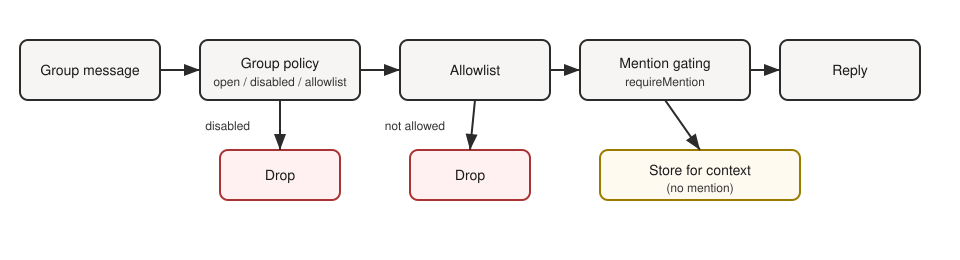

OpenClaw Book: um guia didático, navegável e mais profissional
Este material reorganiza a documentação oficial em uma sequência didática, com referências explícitas para cada tema, receitas operacionais e troubleshooting. A proposta é simples: entender rápido sem perder a trilha oficial.
Mais profundo
Agora o livro cobre não só conceitos, mas também operação, automação, segurança e fluxos de diagnóstico.
Mais útil
Incluí receitas passo a passo, mapas mentais, referências oficiais e seção dedicada de troubleshooting.
Mais confiável
Os capítulos apontam para a doc oficial em docs.openclaw.ai e para a base local usada como fonte.
Como tirar mais proveito do livro
Comece pelo contexto e só depois aprofunde comandos, segurança e troubleshooting.
Quando um termo travar o raciocínio, abra o glossário, recupere o conceito e volte ao capítulo.
Cada capítulo foi escrito para virar ação: compare sempre com a doc oficial e com o estado real do seu gateway.
Trilhas de leitura
Começando do zero
Leia 1 → 5 para formar base mental sobre arquitetura, gateway, CLI e persistência.
Operação diária
Vá para 3, 4, 6, 9 e 13 se sua prioridade é manter o ambiente rodando.
Escalar com segurança
Estude 7, 8, 10 e 11 para tratar provedores, múltiplos agentes, sandbox e automação de browser.
Trabalhar bem com IA
Leia 16 para fluxos, delegação e prompt strategy. Complete as missões do capítulo 17.
Mapa de capítulos com metadados
Cada capítulo tem nível de dificuldade e tema principal. Use para planejar sua leitura.
Visão geral
O que é OpenClaw e o modelo mental básico.
Capítulo 2Arquitetura
Gateway, clientes, nós e sessões.
Capítulo 3Gateway
Serviço, auth, portas e operação.
Capítulo 4CLI
Comandos mais importantes do dia a dia.
Capítulo 5Memória e workspace
Persistência, arquivos e contexto do agente.
Capítulo 6Canais e operação
Telegram, Discord, WhatsApp, grupos, allowlists.
Capítulo 7Modelos e provedores
Seleção de modelos, fallbacks e autenticação.
Capítulo 8Multi-agent e roteamento
Bindings, isolamento e múltiplos agentes.
Capítulo 9Automação
Cron jobs, heartbeat e tarefas agendadas.
Capítulo 10Sandbox e segurança
Isolamento, permissões, secrets, prompt injection e resposta a incidentes.
Capítulo 11Browser e controle remoto
CDP, screenshots, automação de browser.
Capítulo 12Receitas passo a passo
Procedimentos completos para casos de uso comuns.
Capítulo 13Troubleshooting
Diagnóstico orientado a sintomas.
Capítulo 14Referências oficiais
Links e bibliografia operacional.
Capítulo 15Roadmap
Evolução editorial e próximos passos.
Capítulo 16 — NovoAgentes IA: fluxos e delegação
Prompt strategy, human-in-the-loop, avaliação e riscos.
Capítulo 17 — NovoMissões e desafios
Aprendizado gamificado: níveis, missões, drills e scorecard.
Comece por aqui
Se você está avaliando o OpenClaw
Leia os capítulos 1 e 2 para formar um modelo mental do sistema antes de entrar em configuração fina.
Se você vai instalar hoje
Priorize 3, 4 e 12 para ganhar velocidade operacional sem ignorar o contexto técnico.
Se você já opera em produção
Use 9, 10 e 13 como trilha de confiabilidade: automação, segurança prática e diagnóstico.
Fonte + interpretação
O livro preserva a trilha oficial, mas traduz a doc em uma sequência mais fácil de estudar, revisar e compartilhar com equipes.
Leitura orientada a cenários
Cada bloco do conteúdo tenta responder a uma pergunta real: instalar, operar, automatizar, diagnosticar ou evoluir.
Projeto leve para publicar
Sem build obrigatório, sem dependências pesadas e com foco em GitHub Pages, linkabilidade e manutenção simples.
Mapa do livro
Sumário
Visão editorial do conteúdo
- Visão geral do OpenClaw
- Arquitetura: gateway, clientes, nós e sessões
- Gateway: serviço, auth, portas e operação
- CLI: comandos mais importantes
- Memória, workspace e persistência
- Canais, grupos e rotina de uso
- Modelos, fallbacks e provedores
- Multi-agent, bindings e isolamento
- Cron, heartbeat e automações
- Sandbox, escopos e segurança prática
- Browser tool e controle remoto
- Receitas operacionais passo a passo
- Troubleshooting e diagnóstico
- Referências oficiais e bibliografia operacional
- Roadmap editorial e próximos passos
- Agentes IA: fluxos, delegação e avaliação
- Missões e desafios: aprenda operando
O que este livro faz melhor
Sequência pedagógica
Os capítulos foram organizados para reduzir idas e vindas entre conceitos, operação e diagnóstico.
Navegação contextual
Agora cada capítulo pode ter sumário automático, breadcrumbs e navegação anterior/próximo.
Publicação limpa
Metadados, sitemap, acessibilidade básica e consistência visual foram reforçados.
Busca local
Exemplos: gateway, telegram, cron, sandbox, browser, multi-agent. Dica: pressione / para focar na busca.
Diagrama rápido

Referência-mãe
Base editorial derivada da documentação oficial online e da documentação instalada localmente com o pacote OpenClaw.
Para quem mantém ou compartilha este material
Se você pretende usar este livro em onboarding, documentação interna ou estudo pessoal, vale publicar sempre junto do repositório oficial e revisar periodicamente os links das referências.
Sugestão editorial: trate o livro como uma camada de orientação. A decisão final de configuração continua vindo da documentação oficial e do estado real do seu ambiente.